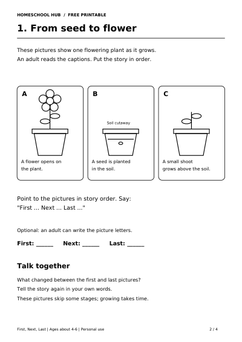

Free printable
First, Next, Last: Tell a Three-Step Story
Ages about 4–6
Help your child put three events in order and tell a short story using first, next and last.
Four A4 pages: a parent model about wrapping a present, two picture stories to sequence and answers with example sentences. Follow a flowering plant as it grows and an ice cube as it melts.
Try one story for 5–10 minutes. An adult reads the captions; your child can point and speak. No independent reading, writing or cutting is required. An adult can record the picture letters if helpful.
Print pages 2–3 on A4 in black and white. A pencil is optional for adult notes. Accept different clear wording that keeps the events in order; the sample sentences are not for memorising.
For more listening and speaking, try Rhyme and Syllables. For observation and conversation, explore the Nature Observation Journal.
